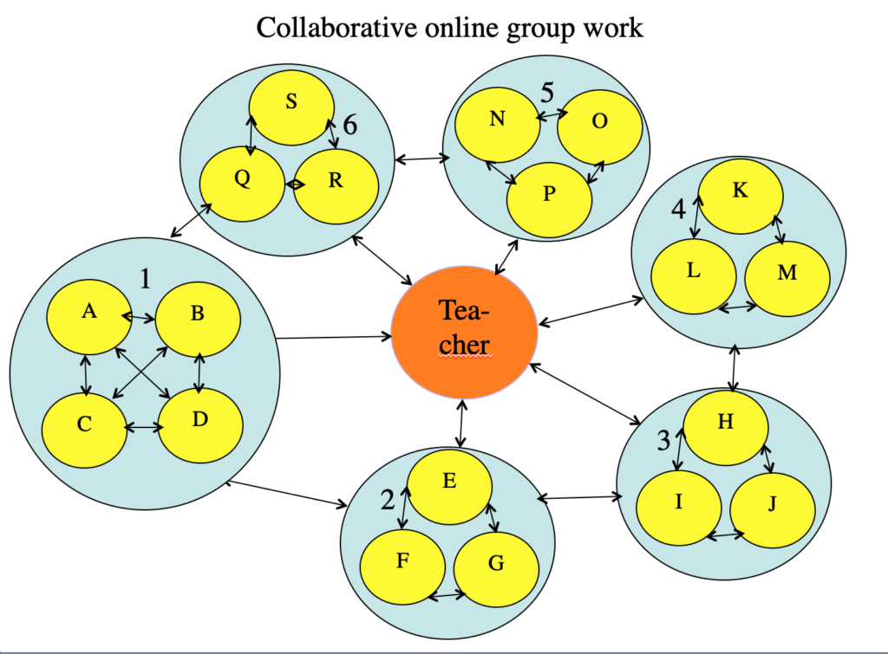
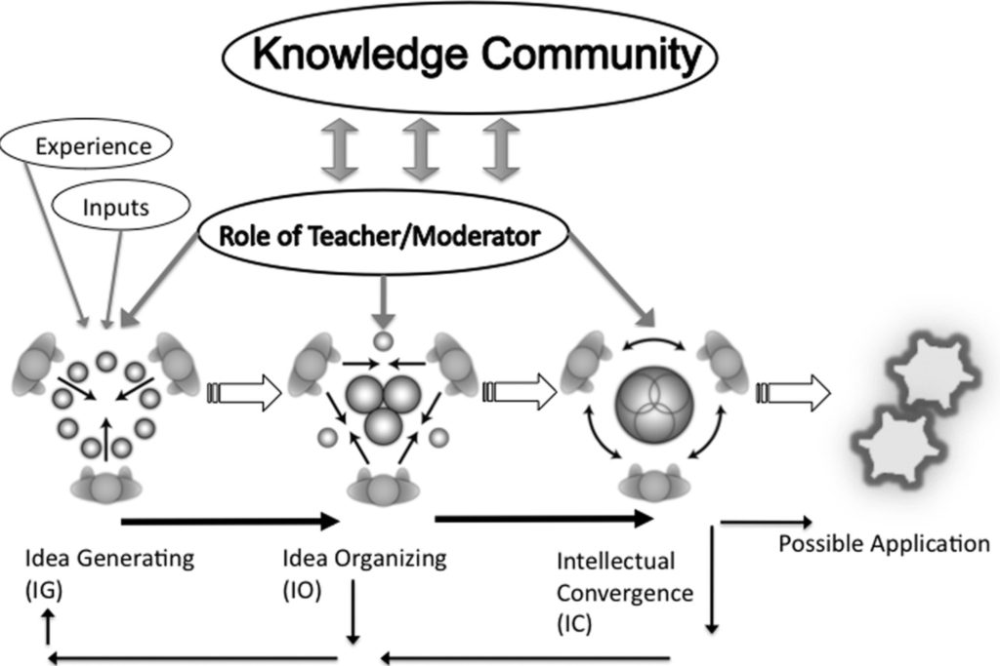
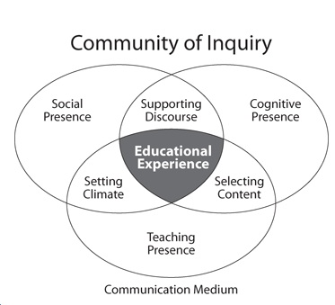

4.4 Aprendizagem colaborativa on-line


4.4.1 O que é aprendizagem colaborativa on-line?
A convergência das abordagens construtivistas da aprendizagem e do desenvolvimento da internet levou ao surgimento de uma forma específica de ensino construtivista, originalmente denominada comunicação mediada por computador (CMC), ou aprendizagem em rede, mas que foi desenvolvida no que Harasim (2017) agora chama de teoria da aprendizagem colaborativa on-line (OCL - Online Collaborative Learning). Ela descreve a OCL da seguinte forma (p. 90):
A teoria OCL fornece um modelo de aprendizagem no qual os estudantes são incentivados e apoiados a trabalhar juntos para criar conhecimento: para inventar, explorar formas de inovar e, ao fazê-lo, buscar o conhecimento conceitual necessário para resolver problemas, em vez de recitar o que consideram ser a resposta certa. Embora a teoria OCL incentive o aprendiz a ser ativo e engajado, isso não é considerado suficiente para a aprendizagem ou construção do conhecimento... Na teoria OCL, o professor desempenha um papel fundamental não como um colega de aprendizagem, mas como o elo com a comunidade de conhecimento, ou o estado da arte nessa disciplina. A aprendizagem é definida como mudança conceitual e é fundamental para a construção do conhecimento. A atividade de aprendizagem precisa ser informada e orientada pelas normas da disciplina e por um processo de discurso que enfatize a aprendizagem conceitual e construa conhecimento.
A OCL baseia-se e integra teorias de desenvolvimento cognitivo focadas na aprendizagem conversacional (Pask, 1975), condições para aprendizagem profunda (Marton e Säljö, 1997; Entwistle, 2000), desenvolvimento do conhecimento acadêmico (Laurillard, 2001) e construção do conhecimento (Scardamalia e Bereiter, 2006).
Desde os primórdios da aprendizagem on-line, alguns instrutores têm se concentrado fortemente nos recursos de comunicação da internet (ver, por exemplo, Hiltz e Turoff, 1978). Basearam o seu ensino no conceito de construção do conhecimento, a estruturação gradual do saber principalmente por meio da discussão on-line assíncrona entre estudantes e entre estudantes e o professor.
Os fóruns de discussão on-line remontam à década de 1970, mas realmente se expandiram como resultado da combinação da invenção da World Wide Web na década de 1990, do acesso à internet de alta velocidade e do desenvolvimento de sistemas de gestão de aprendizagem, a maioria dos quais inclui agora uma área para discussões on-line. Esses fóruns de discussão on-line apresentam, contudo, algumas diferenças em relação aos seminários presenciais:
- primeiro, são baseados em texto e não orais;
- segundo, são assíncronos: os participantes podem fazer login a qualquer momento e de qualquer lugar com conexão à internet;
- terceiro, muitos fóruns de discussão permitem conexões “em tópicos” (threads), permitindo que uma resposta seja anexada ao comentário específico que a motivou, em vez de apenas exibida em ordem cronológica. Isto permite o desenvolvimento de subtópicos dinâmicos, com por vezes mais de dez respostas dentro de um único tópico de discussão. Isso permite que os participantes acompanhem vários temas de discussão ao mesmo tempo.
4.4.2 Princípios centrais de design da OCL
Harasim enfatiza a importância de três fases principais de construção do conhecimento por meio do discurso:
- geração de ideias: trata-se literalmente de um brainstorming para reunir o pensamento divergente dentro de um grupo;
- organização de ideias: onde os estudantes comparam, analisam e categorizam as diferentes ideias geradas anteriormente, novamente por meio de discussão e argumentação;
- convergência intelectual: o objetivo aqui é alcançar um nível de síntese intelectual, compreensão e consenso (inclusive concordando em discordar), geralmente por meio da construção conjunta de algum artefato ou trabalho prático, como um ensaio ou trabalho de avaliação.
Isso resulta no que Harasim chama de Posição Final, embora na realidade a posição nunca seja final porque, para o aprendiz, uma vez iniciado, o processo de gerar, organizar e convergir ideias continua em um nível cada vez mais profundo ou avançado. O papel do professor neste processo é visto como crítico, não apenas na facilitação do processo e no fornecimento de recursos e atividades adequados que incentivem este tipo de aprendizagem, mas também, como representante de uma comunidade de conhecimento ou campo de estudo, na garantia de que os conceitos fundamentais, práticas, padrões e princípios da disciplina sejam totalmente integrados no ciclo de aprendizagem.
Harasim fornece o seguinte diagrama para ilustrar este processo:



Outro fator importante é que, no modelo OCL, os fóruns de discussão não são um acréscimo ou suplemento aos materiais didáticos centrais, como livros didáticos, aulas gravadas ou textos em um LMS, mas constituem o componente central do ensino. Livros didáticos, leituras e outros recursos são escolhidos para apoiar a discussão, e não o contrário.
Este é um princípio de design fundamental e explica por que frequentemente os instrutores ou tutores se queixam, em disciplinas on-line mais “tradicionais”, de que os estudantes não participam das discussões. Muitas vezes isto ocorre porque, quando as discussões on-line são secundárias ao ensino mais didático, ou não são deliberadamente planejadas e gerenciadas para levar à construção do conhecimento, os estudantes veem as discussões como opcionais ou trabalho extra, porque não têm impacto direto nas notas ou na avaliação.
É também uma das razões pelas quais atribuir notas pela participação em fóruns de discussão perde o sentido. Não é a atividade extrínseca que conta, mas sim o valor intrínseco da discussão (ver, por exemplo, Brindley, Walti e Blashke, 2009). Assim, embora os professores que utilizam uma abordagem OCL possam usar sistemas de gestão de aprendizagem por conveniência, estes são utilizados de forma diferente de disciplinas onde o ensino didático tradicional é transferido para o ambiente on-line.
4.4.3 Comunidade de Investigação (Community of Inquiry)
O modelo da Comunidade de Investigação (CoI) é semelhante ao modelo OCL. Conforme definido por Garrison, Anderson e Archer (2000):
Uma comunidade educacional de investigação é um grupo de indivíduos que se engajam de forma colaborativa em discursos críticos intencionais e na reflexão para construir significados pessoais e confirmar a compreensão mútua.
Garrison, Anderson e Archer argumentam que existem três elementos essenciais em uma comunidade de investigação:
- presença social: é “a capacidade dos participantes de se identificarem com a comunidade (por exemplo, o curso de estudo), comunicarem-se intencionalmente em um ambiente de confiança e desenvolverem relacionamentos interpessoais projetando suas personalidades individuais.”
- presença de ensino: é “o design, a facilitação e a direção dos processos cognitivos e sociais com o objetivo de realizar resultados de aprendizagem pessoalmente significativos e educacionalmente valiosos”
- presença cognitiva: é “a medida em que os aprendizes são capazes de construir e confirmar significados por meio de reflexão e discursos contínuos”.



Contudo, a CoI é mais uma teoria do que um modelo, uma vez que não indica quais atividades ou condições são necessárias para criar estas três “presenças”. Os dois modelos (OCL e CoI) são mais complementares do que concorrentes.
4.4.4 Desenvolvendo discussões on-line significativas
Desde a publicação do artigo original da CoI em 2000, houve uma série de estudos que identificaram a importância dessas “presenças” especialmente na aprendizagem on-line (clique aqui para uma ampla seleção). Embora tenha havido uma ampla gama de pesquisadores e educadores engajados na área da aprendizagem colaborativa on-line e comunidades de investigação, há um alto grau de convergência e concordância sobre estratégias bem-sucedidas e princípios de design. Para o desenvolvimento acadêmico e conceitual, as discussões precisam ser bem organizadas pelo professor, e o professor precisa fornecer o suporte necessário para permitir o desenvolvimento de ideias e a construção de novos conhecimentos para os estudantes.
Em parte como resultado desta pesquisa, e em parte como resultado da experiência de professores on-line que não foram necessariamente influenciados pela literatura sobre OCL ou Comunidade de Investigação, vários outros princípios de design têm sido associados a discussões (on-line) bem-sucedidas, tais como:
- tecnologia adequada (por exemplo, software que permita discussões em tópicos/threads);
- diretrizes claras sobre o comportamento dos estudantes on-line, como códigos de conduta escritos para participar em discussões, garantindo que sejam cumpridos;
- orientação e preparação dos estudantes, incluindo orientação tecnológica e explicação do propósito da discussão;
- objetivos claros para as discussões que sejam compreendidos pelos estudantes, tais como: “explorar questões de gênero e classe em romances selecionados” ou “comparar e avaliar métodos alternativos de programação”;
- escolha de tópicos adequados, que complementem e ampliem questões dos materiais de estudo e sejam relevantes para responder às questões de avaliação;
- definição de um “tom” ou requisitos adequados para a discussão (por exemplo, discordância respeitosa, argumentos baseados em evidências);
- definição clara dos papéis e expectativas dos aprendizes, tais como “você deve acessar pelo menos uma vez por semana cada tópico de discussão e fazer pelo menos uma contribuição substantiva para cada tópico a cada semana”;
- monitoramento da participação dos estudantes e resposta adequada, fornecendo o suporte (andaime) necessário, como comentários que ajudem os estudantes a desenvolverem seu pensamento sobre os tópicos, remetendo-os aos materiais de estudo se necessário, ou esclarecendo questões quando os estudantes parecerem confusos ou mal informados;
- presença regular e contínua do professor, como monitorar as discussões para evitar que saiam do tópico ou se tornem muito pessoais, e incentivar os que estão fazendo contribuições reais para a discussão, conter os que tentam monopolizar as discussões e acompanhar os que não estão participando, ajudando-os a participar;
- garantir uma forte articulação entre os tópicos de discussão e a avaliação.
Estas questões são discutidas em maior profundidade por Salmon (2000); Bates e Poole (2003); e Paloff e Pratt (2005;2007).
4.4.5 Questões culturais e epistemológicas
Os estudantes chegam à experiência educacional com diferentes expectativas e origens. Como resultado, existem frequentemente grandes diferenças culturais entre os estudantes no que diz respeito à participação na aprendizagem colaborativa baseada em discussões, que no final refletem diferenças profundas quanto às tradições de aprendizagem e ensino. Assim, os professores precisam estar cientes de que provavelmente haverá estudantes em qualquer turma que possam estar lutando com questões de idioma, culturais ou epistemológicas, mas em turmas on-line, onde os estudantes podem vir de qualquer lugar, esta é uma questão particularmente importante.
Em muitos países, há uma forte tradição de papel autoritário do professor e de transmissão de informações dele para o estudante. Em algumas culturas, seria considerado desrespeitoso contestar ou criticar as opiniões dos professores ou mesmo de outros estudantes. Em uma cultura autoritária, baseada no professor, as opiniões de outros estudantes podem ser consideradas irrelevantes ou sem importância. Outras culturas têm uma forte tradição oral, ou baseada na contação de histórias, em vez da instrução direta.
Os ambientes on-line, portanto, podem apresentar desafios reais aos estudantes quando se adota uma abordagem construtivista no design das atividades de aprendizagem on-line. Isso pode significar a tomada de medidas específicas para ajudar os estudantes que não estão familiarizados com uma abordagem construtivista de aprendizagem, como pedir a um estudante que envie rascunhos ao professor por e-mail para aprovação antes de postar uma contribuição na turma. Para uma discussão mais completa sobre questões interculturais na aprendizagem on-line, consulte Jung e Gunawardena (2014) e a revista Distance Education, Vol. 22, No. 1 (2001), cuja edição completa é dedicada a artigos sobre este tema.
4.4.6 Pontos fortes e fracos da aprendizagem colaborativa on-line
Esta abordagem ao uso da tecnologia para o ensino é muito diferente das abordagens mais objetivistas encontradas na aprendizagem assistida por computador, máquinas de ensinar e aplicações de inteligência artificial na educação, que visam principalmente usar a computação para substituir pelo menos algumas das atividades tradicionalmente realizadas por professores humanos. Com a aprendizagem colaborativa on-line, o objetivo não é substituir o professor, mas usar a tecnologia principalmente para aumentar e melhorar a comunicação entre professor e aprendizes, com uma abordagem particular para o desenvolvimento da aprendizagem baseada na construção do conhecimento assistida e desenvolvida por meio do discurso social. Além disso, esse discurso social não é aleatório, mas gerenciado de forma a apoiar (scaffold) a aprendizagem:
- auxiliando na construção do conhecimento de formas que são orientadas pelo instrutor;
- que reflitam as normas ou valores da disciplina;
- que também respeitem ou levem em consideração o conhecimento prévio dentro da disciplina.
Assim, existem dois pontos fortes principais deste modelo:
- quando aplicada de forma adequada, a aprendizagem colaborativa on-line pode levar a uma aprendizagem acadêmica profunda, ou aprendizagem transformadora, tão bem quanto, se não melhor, do que a discussão em salas de aula presenciais. As potencialidades assíncronas e gravadas da aprendizagem on-line compensam amplamente a falta de pistas físicas e outros aspectos da discussão face a face;
- a aprendizagem colaborativa on-line, como resultado, também pode apoiar diretamente o desenvolvimento de uma gama de competências intelectuais de alto nível, tais como o pensamento crítico, o pensamento analítico, a síntese e a avaliação, que são requisitos fundamentais para os aprendizes na era digital.
Existem, porém, algumas limitações:
- não é facilmente escalável, exigindo professores altamente informados e qualificados, e um número limitado de aprendizes por instrutor;
- tem maior probabilidade de se adequar às posições epistemológicas dos docentes em humanidades, ciências sociais, educação e algumas áreas de estudos de negócios e saúde e, inversamente, é provável que seja menos adequado às posições epistemológicas dos docentes em ciências exatas, ciência da computação e engenharia. No entanto, se combinado com uma abordagem baseada em problemas ou em investigação, pode ter aceitação mesmo em algumas das áreas de STEM (Ciência, Tecnologia, Engenharia e Matemática).
4.4.7 Resumo
Muitos dos pontos fortes e desafios da aprendizagem colaborativa aplicam-se tanto em contextos de aprendizagem presenciais quanto on-line. Poder-se-ia argumentar que existe pouca ou nenhuma diferença entre a aprendizagem colaborativa on-line e o ensino presencial tradicional bem conduzido baseado em discussões. Embora existam adaptações necessárias dependendo do modo de entrega, muitos dos princípios fundamentais da aprendizagem colaborativa bem-sucedida (ver Barkley, Major e Cross, 2014) serão aplicados tanto no ensino on-line quanto no presencial. Mais uma vez, vemos que a modalidade de entrega é menos importante do que o modelo de design, que pode funcionar bem em ambos os contextos. De fato, é possível realizar uma aprendizagem colaborativa bem-sucedida de forma síncrona ou assíncrona, a distância ou presencialmente.
No entanto, há muitas evidências de que a aprendizagem colaborativa pode ser realizada tão bem on-line, o que é importante, dada a necessidade de modelos de entrega mais flexíveis para atender às necessidades de um corpo discente mais diversificado na era digital. Além disso, as condições necessárias para o sucesso do ensino desta forma são agora bem conhecidas, embora nem sempre sejam universalmente aplicadas.
Referências
Barkley, E., Major, C.H., and Cross, K.P. (2017) Collaborative Learning Techniques San Francisco: Jossey-Bass/Wiley
Bates, A. and Poole, G. (2003) Effective Teaching with Technology in Higher Education: Foundations for Success San Francisco: Jossey-Bass
Brindley, J., Walti, C. and Blashke, L. (2009) Creating Effective Collaborative Learning Groups in an Online Environment International Review of Research in Open and Distance Learning, Vol. 10, No. 3
Entwistle, N. (2000) Promoting deep learning through teaching and assessment: conceptual frameworks and educational contexts Leicester UK: TLRP Conference
Garrison, R., Anderson, A. and Archer, W. (2000) Critical Inquiry in a Text-based Environment: Computer Conferencing in Higher Education The Internet and Higher Education, Vol. 2, No. 3
Harasim, L. (2017) Learning Theory and Online Technologies 2nd edition New York/London: Taylor and Francis
Hiltz, R. and Turoff, M. (1978) The Network Nation: Human Communication via Computer Reading MA: Addison-Wesley
Jung, I. and Gunawardena, C. (eds.) (2014) Culture and Online Learning: Global Perspectives and Research Sterling VA: Stylus
Laurillard, D. (2001) Rethinking University Teaching: A Conversational Framework for the Effective Use of Learning Technologies New York/London: Routledge
Marton, F. and Saljö, R. (1997) Approaches to learning, in Marton, F., Hounsell, D. and Entwistle, N. (eds.) The experience of learning: Edinburgh: Scottish Academic Press (esgotado, mas disponível on-line)
Paloff, R. and Pratt, K. (2005) Collaborating Online: Learning Together in Community San Francisco: Jossey-Bass
Paloff, R. and Pratt, K. (2007) Building Online Learning Communities: Effective Strategies for the Virtual Classroom San Francisco: Jossey-Bass
Pask, G. (1975) Conversation, Cognition and Learning Amsterdam/London: Elsevier (esgotado, mas disponível on-line aqui)
Salmon, G. (2000) e-Moderating: The Key to Teaching and Learning Online London: Taylor and Francis
Scardamalia, M. and Bereiter, C. (2006) Knowledge Building: Theory, pedagogy and technology in Sawyer, K. (ed.) Cambridge Handbook of the Learning Sciences New York: Cambridge University Press
Atividade 4.4: Avaliando os modelos de aprendizagem colaborativa on-line
1. Você consegue perceber as diferenças entre “Aprendizagem Colaborativa Aberta” (OCL) e “Comunidades de Investigação”? Ou seriam realmente o mesmo modelo com nomes diferentes?
2. Você concorda que qualquer um destes modelos pode ser aplicado com o mesmo sucesso tanto on-line quanto presencialmente?
3. Você vê outros pontos fortes ou fracos nestes modelos?
4. Trata-se de bom senso disfarçado de teoria?
5. Faz sentido aplicar qualquer um destes modelos a disciplinas nas ciências exatas, como física ou engenharia? Se sim, sob quais condições?
Para meus comentários sobre estas questões, clique no podcast abaixo:
Um elemento de áudio foi excluído desta versão do texto. Você pode ouvi-lo on-line aqui: https://pressbooks.bccampus.ca/teachinginadigitalagev2/?p=125